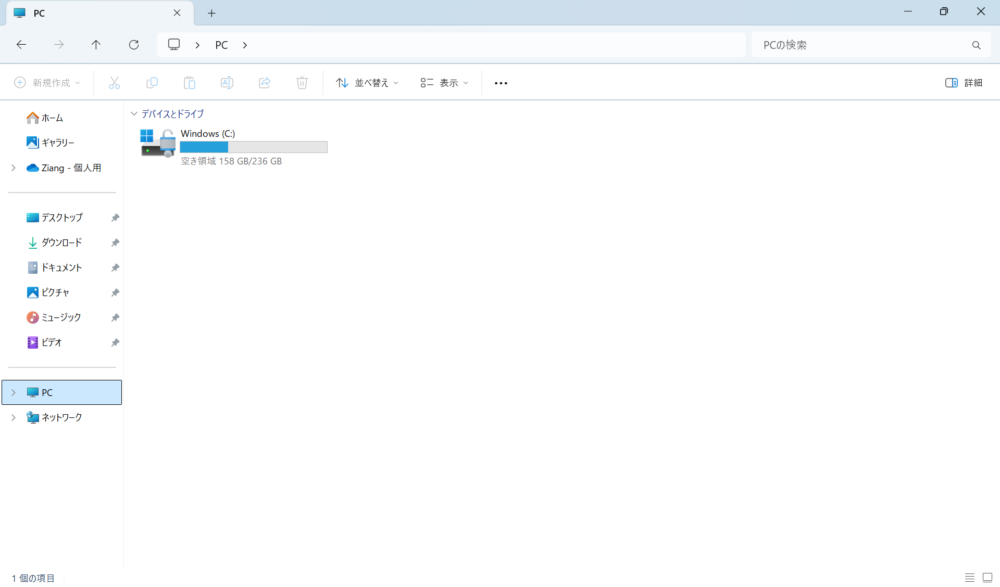

エクスプローラー#
ファイルとフォルダー#
ファイル(file) とは、ある記録媒体に記録したデータの集まりのことです。用途によって、テキストファイル、画像ファイル、音声ファイル、動画ファイルなどがあります。ファイルを識別するためには、データにファイル名が付けられます。
Windowsでは、ファイル名にはベースファイル名と拡張子が含まれています。ベースファイル名はファイルの内容を表す名前で、拡張子はファイルの種類を示す名前です。ピリオド（.）でファイル名と拡張子が区切られています。例えば、sample.txt というファイル名の場合、sample がベースファイル名、txt が拡張子です。
フォルダー(folder) とは、ファイルを整理して保存するための場所です。フォルダーには、ファイルや他のフォルダーを保存することができます。
エクスプローラーの使い方#
エクスプローラー（Explorer）は、Windows に搭載されているファイルを管理するためのアプリケーションです。正式にはファイル エクスプローラー（File Explorer）ですが、一般的にはエクスプローラーと呼ばれています。エクスプローラーを使うと、Windows に保存されているファイルやフォルダーを分かりやすく管理することができます。
エクスプローラーを起動するには、タスクバーにあるエクスプローラーのアイコンをクリックします。または、Windows + E のショートカットキーで起動することもできます。
エクスプローラーの画面は以下のようになります。

ツールバー：新規作成、コピー、貼り付け、削除、並べ替えなどの操作を行うためのボタンが表示されています。
アドレスバー: パス（フォルダーの場所）が表示されています。
検索ボックス: ファイルやフォルダーを検索するためのボックスです。
ナビゲーションペイン: デスクトップ、ダウンロードなどの項目が表示されています。ファイルやフォルダーにアクセスするために使います。
ファイルリスト: フォルダー内のファイルやフォルダーが表示されています。
アドレスバー#
アドレスバーには、フォルダーのパス（場所）が表示されています。パス（path）は、ファイルやフォルダーの場所を示す文字列です。アドレスバーの空白部分をクリックすると、パスが選択され、編集することができます。また、空白部分を右クリックすると、パスのコピー、切り取り、貼り付けなどの操作を行うことができます。
C:\Users\taro\Documents\foo.txt というパスは、C: ドライブの Users フォルダーの taro フォルダーの Documents フォルダーにある foo.txt というファイルを示しています。日本語のWindowsでは、「\」の代わりに「¥」が使われています。日本語のWindowsでは、パスは次のように表示されます。C:¥Users¥taro¥Documents¥foo.txt。
Note
「\」はバックスラッシュ（backslash）、「¥」は円マーク（yen mark）と呼ばれます。日本語のOS環境ではバックスラッシュが円記号として表示されることが多いです。プログラミングでは、よく使われる記号なので覚えておきましょう。
Windowsのパソコンでは、ファイルやフォルダーを階層構造で管理されています。 例えば、C:\Users\taro\Documents\foo.txt というパスは、C: ドライブの Users フォルダーの taro フォルダーの Documents フォルダーにある foo.txt というファイルを示しています。日本語のWindowsでは、「\」の代わりに「¥」が使われています。日本語のWindowsでは、パスは次のように表示されます。C:¥Users¥taro¥Documents¥foo.txt。
下記の例では、「courses」というフォルダーに「c_programming」と「calculus」というフォルダーがあり、それぞれにファイルやフォルダーが保存されています。 「hobbies」というフォルダーには「books」というフォルダーがあり、その中に「how_to_read_a_book.pdf」というファイルが保存されています。
courses
├── c_programming
│ ├── code
│ │ ├── hello.c
│ ├── slides
│ │ ├── lesson_1.pptx
├── calculus
│ ├── notes
│ │ ├── chapter_1.docx
| ├── exercises
│ │ ├── exercise_1.docx
hobbies
├── books
│ ├── how_to_read_a_book.pdf
ナビゲーションウィンドウ#
下の表は、ナビゲーションウィンドウに表示される項目とその説明です。 用途に応じて、適切な項目を使ってファイルやフォルダーを管理しましょう。
要素 |
説明 |
|---|---|
ホーム |
エクスプローラーのホーム画面、起動時に表示される |
ギャラリー |
画像や動画のファイルをサムネイルで表示する |
OneDrive |
Microsoft のクラウドストレージサービス |
デスクトップ |
デスクトップに保存されているファイルやフォルダー |
ダウンロード |
インターネットからダウンロードしたファイルの保存場所 |
ドキュメント |
一般的なドキュメントファイルの保存場所 |
ピクチャ |
画像ファイルの保存場所 |
ミュージック |
音楽ファイルの保存場所 |
ビデオ |
動画ファイルの保存場所 |
検索ボックス#
エクスプローラーの検索ボックスにキーワードを入力すると、ファイルやフォルダーを検索することができます。
ショートカット#
ショートカット |
説明 |
|---|---|
Windows + E |
エクスプローラーを開く |
Ctl + C |
ファイルやフォルダーをコピー |
Ctl + V |
コピーしたファイルやフォルダーを貼り付け |
Ctl + X |
ファイルやフォルダーを切り取り |